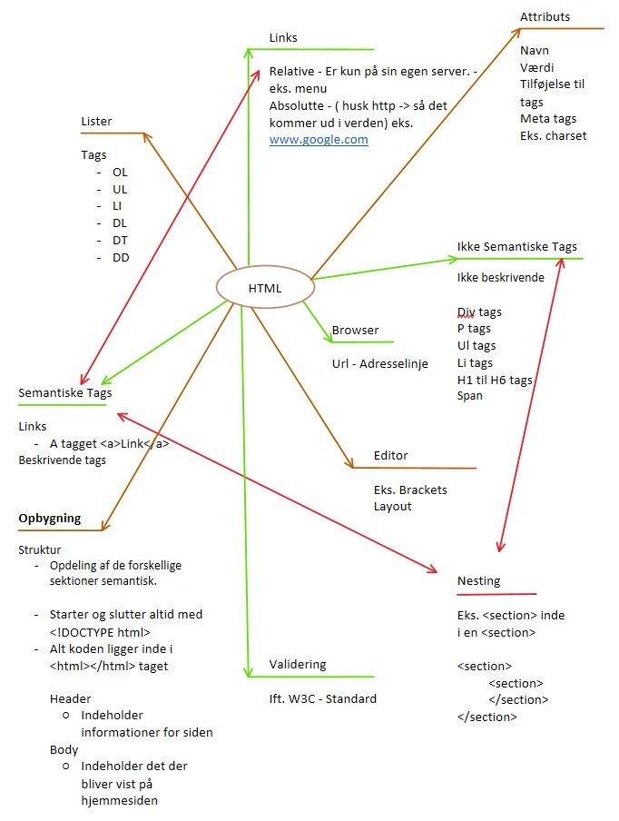

Html ~ Et Mind map

Internettet er en forbindelse, en fysisk infrastruktur.
Webbet er der hvor informationen ligger.
Hvad er HTML?
Hypertext er noget der forbindes på flere forskellige måder.
For eksempel hvad er en hest? er det:
Dyret
En skakbrik
Et gymnastikredskab
Internettet er fuld af disse sammenhæng mellem data.
Skabelsen af "see more" options, man finder når man søger på noget, og kan få information om noget tilsvarende eller noget i samme kategori, kommer fra dette.
Hvem?
Tim Berners Lee, lavede The first "Common" sporg computeren havde, nemlig HTML;
Hyper
Text
Markup
Language
Det han lavede var frit for alle, og kostede ikke noget, fordi han ønskede at alle kunne komme på nettet, og at folk skulle begynde at bruge det, samt skrive kode selv.
Han blev slået til ridder i England, og hyldet meget for sine bedrifter.
Men hvad er html i kodning?
Når man skriver en hjemmeside i html, opstiller man en hjemmeside med nogle grundlæggende tags.
Man skriver altid
<!DOCTYPE html>
når man starter ud med en hjemmeside, for at angive hvilket sprog hjemmesiden bliver skrevet i.
Defter er der HTML tagget
<html></html>dette er her alt data på hjemmesiden ligger i.
Efter dette har man to tags, en
<head></head> og
<body></body>
Head
I head ligger man information som titlen på hjemmesiden i et
<title></title> tag, og man angiver hvilket sprog hjemmesiden
er blevet kodet i med et meta tag
<meta charset="utf-8" /> man ligger også links ind til ens CSS, og hvis man f.eks. har brugt
fonts eller open source programmer her.
Alt hvad der ligger i ens header vil ikke blive vist på hjemmesiden, men vil stadig være aktiv.
Body
I body ligger alt ens basale kode, og her finder man ting som de semaniske tags, links til for eksemple billeder, andre sider af ens hjemmeside, andre hjemmesider mm.
Semantiske tags
Siden tidsperioden for internettes historie; Den semantiske søgning, har semaniske tags været en stor del af hjemmesider. Dissa tags
er med til at søgeoptimere hjemmesiden, så netop din hjemmeside vil være en af de første resultater der vil komme frem, når man søger
efter noget bestemt, og det er på din side.
Et semantisk tag kan f.eks. være;
<section></section>
<header></header>
<nav></nav>
<footer></footer>
Disse tags bliver nemlig ranket af googles pagerank system.
Links og billeder
Billeder
Når man ønsker at bruge et billede på ens hjemmeside, skal man bruge et img tag.
På denne side har jeg lagt et billede ind af et mind map jeg lavede over html, og tagget ser sådan her ud;
Img fortæller browseren at dette er et billede den skal indlæse, og src viser browseren hvor dette billede findes henne, en fil sti eller en hjemmeside mm. Man kan sætte et class eller id på til ens CSS, og man kan give den en alt tekst,
der giver billedet en tekst, når man hover over billedet med sin mus. Alt er også et semantisk tag, og vil hjælpe på søgeoptimeringen.
Links
Det er næsten umuligt at have en størrer hjemmeside uden links, da disse tags er med til at skabe navigation og sammenhæng, mellem de forskellige elementer der findes på siden, både intern og ekstern.
Et link til en anden side på denne hjemmeside, vil se sådan her ud;
<a href="HistorienInternettet.html">HistorienInternettet</a>
Her er a ligesom img, a fortæller browseren at dette er et link, href er ligesom src, og fortæller hvor filerne ligger.